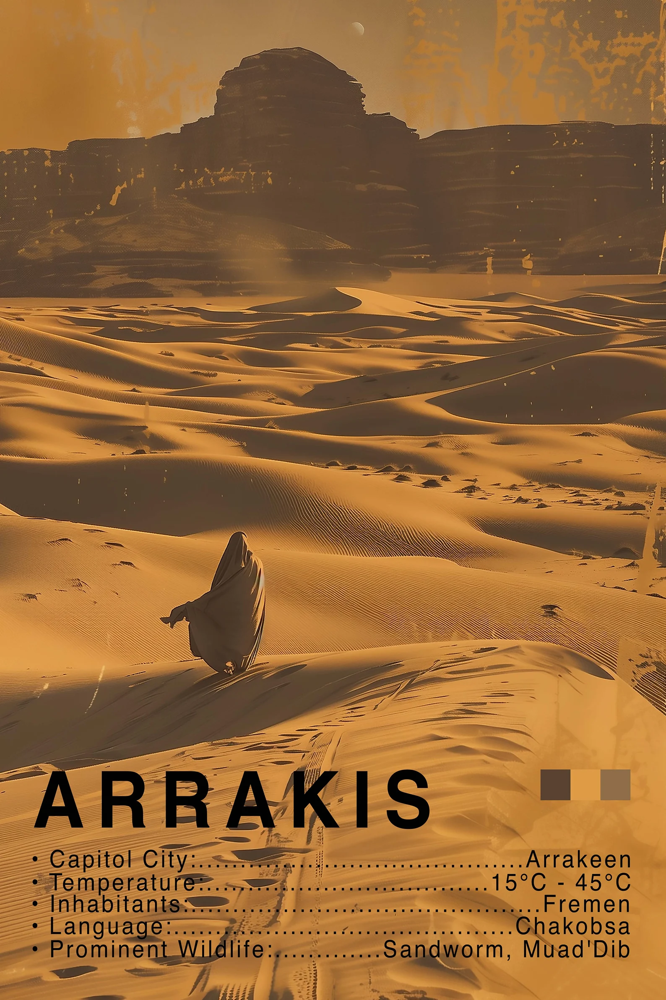
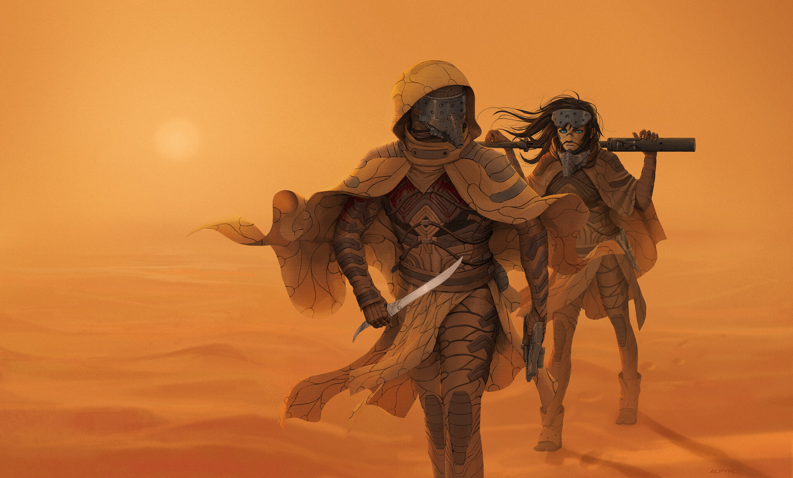
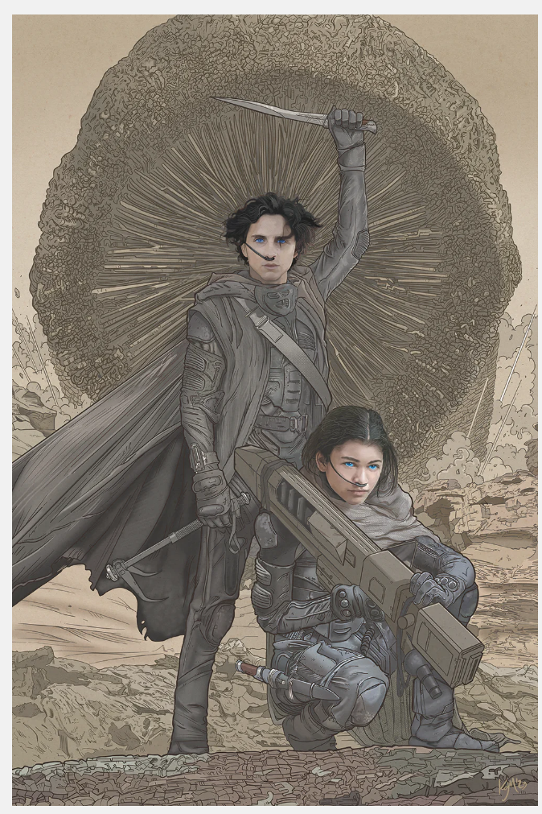

Plot
Arrakis is a barren, desert-covered planet with an unforgiving climate. Scorching days and freezing nights define existence. Water is the most precious resource, carefully preserved by the native Fremen. Towering dunes stretch endlessly, shaped by relentless winds. Despite its harsh conditions, Arrakis holds immense value as the sole source of spice melange, the substance essesntial to space travel. It is the most valuable substance in the universe. Control of Arrakis means control of spice, making it the focal point of power struggles and imperial ambition.
Shai-Hulud, the great sandworms of Arrakis, are colossal, ancient creatures revered by the Fremen as divine beings. They shape the desert and are essential to spice production. Both feared and worshiped, they symbolize the harsh power of Arrakis itself. The Fremen ride them, mastering the desert through skill and tradition.
The Fremen are a fierce, desert-dwelling people who have adapted to Arrakis' extreme conditions. Their deep blue "eyes of Ibad" result from constant spice exposure. Skilled in survival and warfare, they believe in the prophecy of Lisan al-Gaib, the messiah off-worlder who will lead them to freedom and paradise.

House Atreides is ordered by Emperor Shaddam IV to take control of Arrakis, the desert planet that produces the spice melange, the most valuable substance in the universe. Duke Leto Atreides moves his family to their new home, knowing it is a trap set by House Harkonnen. Baron Harkonnen, with the Emperor’s secret support, launches a devastating attack, killing Leto and scattering his forces. Paul and Lady Jessica escape into the deep desert, pursued by their enemies. With little hope of survival, they seek refuge among the Fremen, the fiercely independent people who have long resisted Harkonnen rule.
Paul and Jessica adapt to life among the Fremen, proving their worth through skill and resilience. Paul’s growing prescient abilities confirm what Jessica has long suspected, he is the Kwisatz Haderach, the one prophesied to see beyond space and time. Stilgar, the leader of the Fremen, becomes Paul’s mentor, guiding him in the ways of the desert and survival. Chani, a fierce Fremen warrior, becomes his closest companion and lover. As Paul gains the loyalty of the Fremen, he embraces his new identity as Muad’Dib, leading a growing resistance against the Harkonnens and the Imperium itself.
After years of preparation, Paul launches his final assault. His Fremen warriors, riding sandworms and striking with unmatched precision, dismantle the Harkonnen forces. Baron Harkonnen meets a brutal end as Paul seizes control of Arrakis. The Emperor arrives with his armies to crush the rebellion, but Paul, now commanding both the spice supply and the loyalty of the Fremen, forces him into submission. In a final confrontation, he claims the Imperial throne through political and military dominance. Though he has achieved ultimate power, Paul realizes that his rise has set in motion events beyond his control, shaping the future of the galaxy in ways he cannot escape.